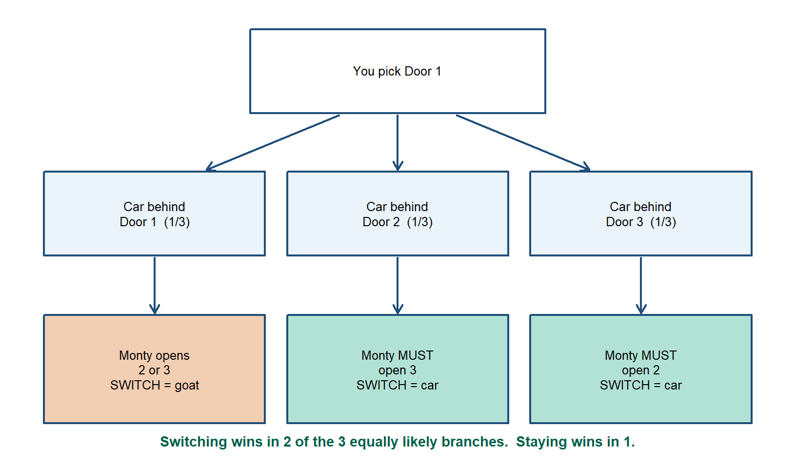
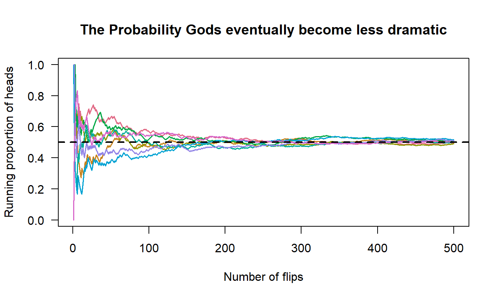
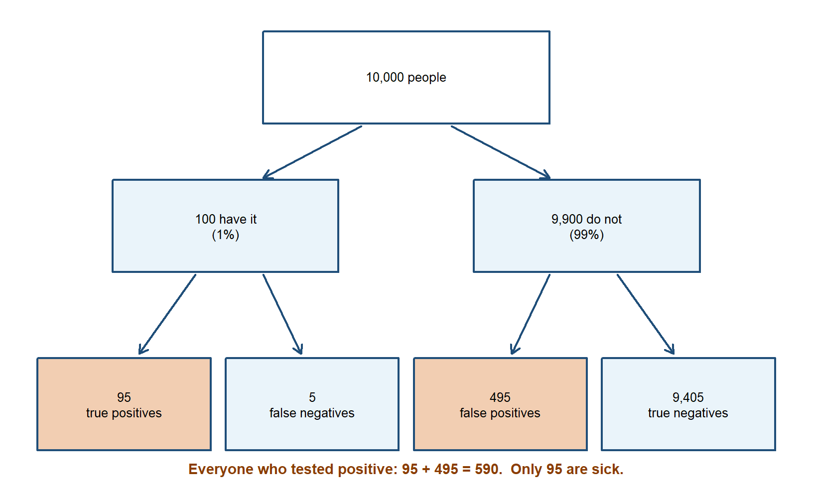

You are on a game show. There are three doors. Behind one is a car. Behind the other two are goats. My guess is you want the car, but I don’t know why. Goats have several advantages: a) they make funny sounds when they scream, b) some faint when frightened, and c) you can use one to cast a Greek curse on the Chicago Cubs so they never win another game!
You choose Door 1. The host, Monty, knows where the car is. He opens one of the other doors and reveals a goat. He then offers you a choice: stay with Door 1 or switch to the remaining closed door.
Should you stay, switch, or does it make no difference what you do? I think you should declare that goats are better than cars and ask for a goat!
So what should you do?
NoteWhat Most People Do
Most people stay. Some believe a deity secretly loves them above all others and guided them to the correct door. Switching would insult the deity. Others know they would be furious if they chose the correct door and then switched away from it. Finally, some people use their giant frontal cortex to conclude that two remaining doors must mean a 50/50 chance.
All three groups stay. All three groups are wrong.
Well, people are really bad at probability, and it is not 50/50. You should switch. Staying with your first door wins about \(1/3\) of the time; switching wins about \(2/3\) of the time.
Why? Your original choice had a \(1/3\) chance of being correct and a \(2/3\) chance of being wrong. Monty did not open a random door. He used his knowledge to remove a goat from the two doors you did not choose. If your first choice was wrong—which happens \(2/3\) of the time—switching fixes it.
Do not believe me. Believing me is not the point of this class. Make R play the game ten thousand times and check:
set.seed(343)play_monty <-function(switch_doors) { car <-sample(1:3, 1) # where the car actually is pick <-sample(1:3, 1) # your first guessif (switch_doors) {# Monty removes a goat door, so switching lands on the car# whenever your first guess was wrong. pick != car } else { pick == car }}stay <-replicate(10000, play_monty(switch_doors =FALSE))switch<-replicate(10000, play_monty(switch_doors =TRUE))c(stay =mean(stay), switch =mean(switch))
stay switch
0.3382 0.6616
Two-thirds. R has no intuition to override, which is exactly why it got this right and we did not.
If the simulation still feels like a trick, draw the whole game out. There are only three ways it can start, because there are only three doors the car can be behind, and each is equally likely:

Every possible game, assuming you picked Door 1. Switching wins in two branches out of three.
The middle and right branches are where the whole thing turns. In both of them Monty has no choice at all about which door to open, because one door has the car and the other has your original pick. His hand is forced, and that forced move is what hands you the information. Only in the left branch, where you already had the car, does he get a free choice, and that is the one branch where switching costs you.
This answer depends on the rules: Monty knows where the car is, always opens a goat door, and always offers the switch. If the host sometimes opens the car, chooses doors randomly, or offers a switch only when he is bored, the probability changes. A probability depends on the rules that produce the outcomes. Change the rules, and you may change the probability. Keeping the old probability after quietly changing the rules is how nonsense enters wearing a lab coat.
The Monty Hall problem feels wrong because people often treat all visible options as equally likely. They are not. Two possible outcomes do not automatically mean 50/50 (Ang and Shahrill 2014). A hypothesis test can also end with two possible decisions. That does not mean each decision had a 50% probability.
3.2 What Probability Means, and What It Will Never Promise You
A probability is a number from 0 to 1 describing how likely an event is under stated assumptions.
An impossible event has probability 0.
A certain event has probability 1.
\(P(A)=.50\) means that across many comparable opportunities, event \(A\) should occur about half the time.
That last sentence is important. Probability does not promise that exactly 10 of your next 20 coin flips will be heads. It describes what happens over many repetitions. In a small sample, chance can behave like a raccoon inside a convenience store: energetic, destructive, and technically following the laws of nature.
The sample space is the set of possible outcomes. For one ordinary six-sided die:
\[
S = \{1,2,3,4,5,6\}.
\]
If the die is fair, the probability of rolling a 2 is
\[
P(2)=\frac{1}{6}=.167.
\]
The word fair is an assumption. Statistics is full of assumptions. We will test some and defend others. Occasionally, we will discover that an assumption came from someone in 1974 who “felt” it was right. Everyone else cited them and put their fingers in their ears.
3.3 Three Rules That Do Most of the Work
3.3.1 The complement rule: “not A”
The probability that an event does not occur is
\[
P(\text{not }A)=1-P(A).
\]
Let event \(A\) mean a participant figures out what your study is really about. Suppose:
\[
P(A)=.20
\]
The probability that the participant does not notice them is:
\[
P(\text{not }A)=1-.20=.80
\]
This example does not include a research assistant revving a chainsaw to increase the participant’s heart rate. Everyone would notice that, so \(P(\text{not }A)=0\). More importantly, the ethics board already rejected it.
3.3.2 The addition rule: “A or B”
For events that cannot occur together,
\[
P(A \text{ or } B)=P(A)+P(B).
\]
On one die roll, the probability of a 1 or a 2 is \(1/6+1/6=2/6\).
If events can overlap, subtract the overlap so it is not counted twice:
\[
P(A \text{ or }B)=P(A)+P(B)-P(A \text{ and }B).
\]
3.3.3 The multiplication rule: “A and B”
If two events are independent, knowing one occurred tells us nothing about the probability of the other:
\[
P(A \text{ and }B)=P(A)P(B).
\]
The probability of getting heads twice with a fair coin is \(.5\times.5=.25\).
Independent does not mean “different.” It means one event does not change the probability of the other.
The next example uses a standard deck: 52 cards, 13 of them hearts. With replacement means you put the card back and reshuffle, so the deck resets and forgets you. Without replacement means the card stays out, so the deck remembers. That distinction returns much later, when we resample our own data with replacement and call it bootstrapping.
Drawing two hearts with replacement gives
\[
\frac{13}{52}\times\frac{13}{52}=.0625.
\]
Without replacement, the first card changes what remains:
\[
\frac{13}{52}\times\frac{12}{51}=.0588.
\]
The second probability is conditional on what happened first.
WarningMutually Exclusive Is Not the Same as Independent
Mutually exclusive events cannot happen together. If one occurs, the other becomes impossible.
Independent events can happen together, but one does not change the probability of the other.
For one die roll, rolling a 2 and rolling a 5 are mutually exclusive. They are not independent. Once you roll a 2, the probability that the same roll was a 5 collapses to zero.
These terms sound vaguely similar and are waiting for an opportunity to ruin your exam.
3.4 Conditional Probability: The Vertical Bar Is Not Decoration
\(P(B\mid A)\) means “the probability of \(B\) given that \(A\) occurred.”
The general multiplication rule is
\[
P(A \text{ and }B)=P(A)P(B\mid A).
\]
Conditional probabilities answer questions about a restricted group. For example:
\(P(\text{passes})\) asks about everyone.
\(P(\text{passes}\mid\text{attended review})\) asks only about students who attended the review.
Reversing the condition reverses the question. The probability that a person is tall given that they play basketball is not the probability that they play basketball given that they are tall. Likewise, a p-value will eventually describe how probable data this extreme—or more extreme—would be if \(H_0\) and the model assumptions were true. It does not describe the probability that \(H_0\) is true. Swapping those is one of psychology’s favorite avoidable catastrophes.
ImportantThe Direction of the Bar Matters
\[
P(B\mid A) \neq P(A\mid B)
\]
The probability of playing basketball given that someone is tall is not the probability of being tall given that someone plays basketball.
Read everything after the vertical bar first. It identifies the group we are standing inside. Reversing the bar changes the group and usually changes the answer.
3.5 Chance Is Fickle, Not Obligated to Look Random
Imagine 20 coin flips. Humans usually invent sequences with roughly equal heads and tails, few long streaks, and tasteful amounts of alternation. Real coins have no taste. They produce clusters and streaks because streaks are part of randomness.
The chance of getting exactly 10 heads in 20 fair flips is only about 17.6%. Getting between 8 and 12 heads happens about 73.7% of the time. A result outside that range is not impossible. The Probability Gods did not violate a contract; you invented a contract they never signed.
NoteThree Ways Your Brain Gets This Wrong (They Have Names)
Gambler’s fallacy. After five heads you feel a tail is “due.” It is not. The coin has no memory, no sense of fairness, and no idea you are watching.
Representativeness. Real randomness looks streakier than the tidy sequences people invent. You just watched yourself expect the wrong thing.
Availability. Vivid events feel more probable than they are. Plane crashes make the news; car crashes make the traffic report. Guess which one kills more people.
set.seed(242343)flips <-500paths <-replicate(8, cumsum(rbinom(flips, 1, .5)) /seq_len(flips))matplot(seq_len(flips), paths,type ="l", lty =1, lwd =1.7,col = grDevices::hcl.colors(8, "Dark 3"),ylim =c(0, 1),xlab ="Number of flips",ylab ="Running proportion of heads",main ="The Probability Gods eventually become less dramatic",las =1)abline(h = .5, lty =2, lwd =2, col ="black")

Figure 3.1: The running proportion of heads in eight fair-coin experiments. Early estimates stagger around; with more flips, they become more stable around .50.
Larger samples do not force the estimate to be correct. They make wildly inaccurate estimates less common. With 20 therapy clients, the Probability Gods might hand you 20 people who adore the treatment, or 20 people who hate your face. With 200 clients, finding enough unusually delighted or face-hating people to hijack the entire result becomes much harder.
This is the law of large numbers: as the number of independent observations increases, a sample average or proportion tends to settle near its expected value. It is not the law of small numbers. Twenty people do not become a population because the grant ran out.
3.6 Expected Value Is a Long-Run Average, Not a Prophecy
The expected value is the probability-weighted average outcome over many repetitions:
\[
E(X)=\sum xP(x).
\]
Suppose a legitimate carnival game charges \(\$2\). You win \(\$10\) with probability \(.10\) and \(\$0\) otherwise. Your expected winnings are
\[
E(X)=\$10(.10)+\$0(.90)=\$1.
\]
After paying \(\$2\), your expected net result is \(-\$1\) per game. You could still win \(\$8\) on the first play. Expected value does not predict one event; it describes the long-run average. The carnival can stay in business because it has patience and your money.
NoteExpected Does Not Mean Most Likely
An expected value does not have to be an outcome that can actually occur.
The expected number of children in a family might be 1.7. Nobody has to produce seven-tenths of a child. The value describes the long-run average across many families.
Expected value is an average, not a prophecy or a declaration from the Probability Gods.
3.6.1 Numbers Bounce
Here is the picture to keep for the rest of the book, because we are going to need it constantly.
Drop a rubber ball on the sidewalk. You know roughly where it is going to end up. You are not surprised by where it lands, and you would not accept a bet that it will roll into traffic. But it bounces on the way down, and it almost never comes to rest on the exact spot you were aiming at. Sometimes it settles an inch away. Once in a while it catches an edge and ends up under a parked car.
Numbers that come out of chance behave the same way. They have a place they are aimed at, which is the expected value, and they have a bounce, which is everything else. The aim is predictable. The bounce is not.
Almost every worry in the rest of this book is one of two questions about that ball. Where was it aimed? That is estimation: means, proportions, effect sizes. How far does it bounce? That is the standard error, and it is the reason we cannot simply read a number off a sample and believe it.
So when a later chapter says a sample mean bounces around, this is the ball. It does not mean the number is wrong. It means the number is one landing out of many that could have happened, and that if you drop the ball again you should expect a slightly different answer.
3.7 Advanced Section: Bayes, Base Rates, and a Scary Positive Test
You test positive for a rare condition that will turn you into a goat. The condition affects 1% of people. The test correctly detects 95% of cases and has a 5% false-positive rate. What is the probability that you actually have the condition and turn into a goat?
The tempting answer is 95%. That answer has ignored almost everyone who does not have the condition.
Imagine testing 10,000 people. Assume:
1% actually have the condition.
The test correctly detects 95% of people who have it.
The test incorrectly gives a positive result to 5% of people who do not have it.
3.7.1 Step 1: Who Has the Condition?
\[
10{,}000 \times .01 = 100
\]
So 100 people have the condition. The other 9,900 do not.
3.7.2 Step 2: Test the 100 People Who Have It
The test correctly identifies 95% of them:
\[
100 \times .95 = 95
\]
Therefore:
95 receive a true positive.
5 receive a false negative.
3.7.3 Step 3: Test the 9,900 People Who Do Not Have It
The test incorrectly gives a positive result to 5% of them:
\[
9{,}900 \times .05 = 495
\]
Therefore:
495 receive a false positive.
9,405 receive a true negative.
3.7.4 Step 4: Count Everyone Who Tested Positive
The positive results include 95 true positives and 495 false positives:
\[
95 + 495 = 590
\]
A total of 590 people test positive. However, only 95 of them actually have the condition.

Ten thousand imaginary people, none of whom will email my department head. The two shaded boxes are everyone who tested positive. Most of them are fine.
3.7.5 Step 5: Find the Probability of Having the Condition After Testing Positive
Therefore, a person who tests positive has about a 16.1% probability of actually having the condition.
The test is fairly accurate, but the condition is rare. That leaves the Probability Gods plenty of healthy people to terrify with false predictions that they will turn into goats tomorrow.
WarningA 95% Detection Rate Is Not a 95% Diagnosis
The test detects 95% of people who have the condition:
\[
P(\text{Positive}\mid\text{Condition})=.95
\]
Our actual question reverses the condition:
\[
P(\text{Condition}\mid\text{Positive})=.161
\]
Those are different probabilities. Test performance, false-positive rates, and the base rate must all be considered before the test can accuse you of becoming a goat.
The base rate describes how common the condition is before we consider the new evidence. When the condition is rare, even a fairly accurate test can produce many false alarms. This is why probability questions are easier when we turn percentages into counts of actual imaginary people. The imaginary people are easier to organize and much less likely to contact my department head to complain about being turned into goats.
WarningNow Let the Test Pass Sentence
Screening someone is one thing. Acting on the result is another.
Suppose we fired all the doctors and let the test decide, Judge Dredd style: the machine is judge, jury, and executioner, and there is no appeal. Of the 590 people it convicts, 495 are innocent. That is an 84% wrongful-conviction rate from a test that is 95% accurate.
The accuracy was never the problem. The base rate was.
\(P(H)\) is the prior probability or base rate. \(P(E\mid H)\) tells us how expected the evidence is if the hypothesis is true. \(P(H\mid E)\) is the posterior probability after combining the prior and evidence.
You do not need to become a Bayesian statistician today. You do need to remember that evidence does not arrive in an empty universe. Base rates matter, and \(P(E\mid H)\) is not interchangeable with \(P(H\mid E)\).
3.8 What This Has to Do with Statistics (Everything, Unfortunately)
Every study will produce a pattern. One group will have a higher mean. One correlation will be farther from zero. One brain image will contain a bright blob, possibly inside a dead salmon if you run enough tests (Bennett et al. 2010). That is a real study, and we will meet the salmon again in the multiple comparisons chapter.
Statistics asks whether the pattern is larger than we would reasonably expect from a specified chance process. To answer that question, we need to know:
what outcomes were possible;
what assumptions define the probability model;
whether events are independent;
what information we conditioned on;
how much data we collected; and
how often our entire analysis gave chance an opportunity to create something exciting.
3.9 The Short Story
A probability is a number from 0 to 1, and it only means something under a stated set of rules. Change the rules and you change the answer.
The three rules do most of the work: “not A” is \(1-P(A)\), “A or B” adds (minus the overlap), “A and B” multiplies when the events are independent.
\(P(B \mid A)\) is not \(P(A \mid B)\). Read everything after the bar first—it tells you which group you are standing inside.
Streaks are part of randomness, not evidence against it. Your brain will insist otherwise, and your brain has names for how it does this.
Expected value is a long-run average. It does not predict your next outcome, and it does not have to be an outcome that can happen.
When a condition is rare, even an accurate test produces mostly false alarms. Base rates decide how to read the evidence.
Larger samples give chance fewer chances. That is the whole reason the rest of this book exists.
Probability is not a promise about what must happen next. It is a language for uncertainty. The Probability Gods remain fickle, but they are not completely lawless. Our job is to learn the laws well enough that we stop blaming divine intervention for bad design.
Ang, L. H., and Masitah Shahrill. 2014. “Identifying Students’ Specific Misconceptions in Learning Probability.”International Journal of Probability and Statistics 3 (2): 23–29.
Bennett, Craig M., Abigail A. Baird, Michael B. Miller, and George L. Wolford. 2010. “Neural Correlates of Interspecies Perspective Taking in the Post-Mortem Atlantic Salmon: An Argument for Proper Multiple Comparisons Correction.”Journal of Serendipitous and Unexpected Results 1 (1): 1–5.